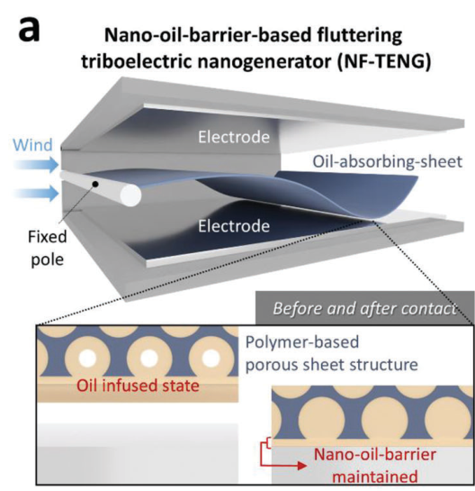
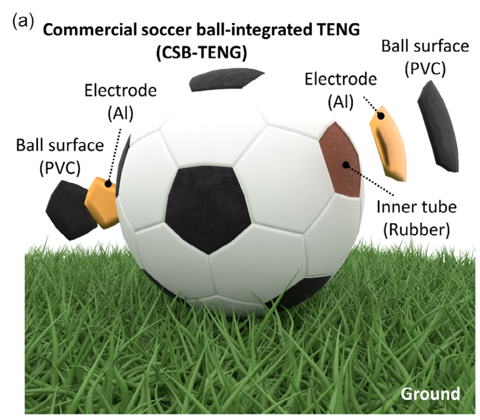
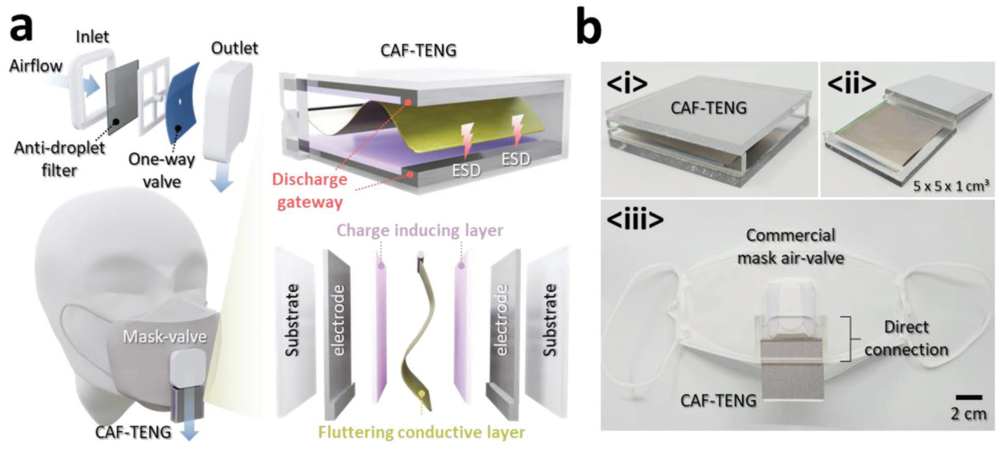
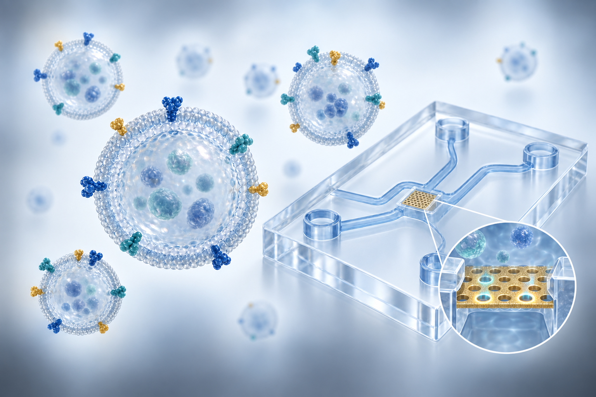

02 / RESEARCH
Research areas주요 연구 분야
SEND Lab engineers functional materials, interfaces and device architectures to convert mechanical energy and biological interactions into electrical and optical signals. Our research integrates materials processing, electrode and micro/nanostructure design, device fabrication, packaging and system-level validation, with applications in energy harvesting, self-powered safety, wearable healthcare and nanoscale biomarker analysis.SEND Lab은 기능성 재료·계면과 소자 구조를 설계하여 기계적 에너지와 생체 상호작용을 전기·광학 신호로 변환하는 기술을 연구합니다. 재료 가공, 전극·마이크로/나노구조 설계, 소자 제작, 패키징 및 시스템 수준의 검증을 연계하며, 에너지 하베스팅, 자가발전 안전센서, 웨어러블 헬스케어, 나노스케일 바이오마커 분석으로 연구를 확장합니다.
01 / RESEARCH AREA
Energy harvesting에너지 하베스팅
We investigate how material properties, interfacial charge transfer and mechanical architecture determine electrical energy conversion. By engineering charge generation, accumulation, transport and discharge, we develop triboelectric and hybrid devices that harvest airflow, human motion and liquid motion.재료의 물성, 계면에서의 전하 이동, 기계적 구조가 전기에너지 변환에 미치는 영향을 연구합니다. 전하 생성·축적·이동·방전 과정을 제어하여 공기 흐름, 신체 움직임, 액체 운동에서 에너지를 회수하는 마찰대전 및 하이브리드 발전 소자를 개발합니다.
Charge transport & high-output generation전하 수송 제어와 고출력 발전
We engineer charge-transfer pathways to improve the current output of triboelectric nanogenerators. Ion-enhanced field emission, direct electron flow, unidirectional charge accumulation and diode-assisted polarization are integrated with electrode and discharge-channel design in planar, rotating-disk and origami architectures.마찰대전 나노발전소자의 출력 전류를 높이기 위해 전하 수송 경로를 설계합니다. 이온 강화 전계방출, 직접 전자 이동, 단방향 전하 축적, 다이오드를 이용한 분극 제어를 전극·방전 통로 설계와 결합하여 평판형, 회전 디스크형, 종이접기형 소자로 구현합니다.
Device design, fabrication & validation소자 설계·제작 및 성능 검증
Electrode geometry, material stacking and mechanical actuation are co-designed and translated into fabricated prototypes. Electrical characterization includes peak and RMS output, capacitor charging and electronic-load operation, while repeated-actuation tests assess the stability of device performance.전극 형상, 재료 적층 구조, 기계적 구동 방식을 함께 설계하고 시제품 제작·조립으로 구현합니다. 순간 최대 출력과 실효값(RMS), 커패시터 충전, 전자기기 구동을 통해 전기적 성능을 평가하고, 반복 구동 시험으로 성능의 안정성을 검증합니다.

Airflow harvesting & flutter dynamics공기 유동·플러터 기반 에너지 하베스팅
Flutter-driven generators couple airflow-induced film motion with contact electrification and controlled discharge. We investigate charge-accumulating, unidirectional charge-supplying and bidirectional flutter mechanisms, tailoring supports, electrode placement and discharge gateways to the dynamics of the moving layer.공기 유동에 의해 발생하는 막의 플러터 운동을 접촉 대전 및 제어된 방전과 연결합니다. 전하 축적형, 단방향 전하 공급형, 양방향 플러터 메커니즘을 연구하고, 운동 특성에 맞춰 지지 구조, 전극 배치, 방전 통로를 설계합니다.
Materials & interface engineering재료·계면 설계 및 제작
Oil-absorbing substrates and oil-infusion processes form nano-oil-barrier interfaces that retain a lubricating layer during repeated contact. Material selection, surface characterization and cyclic-operation testing establish how interfacial design affects charge generation, wear and operational stability.오일 흡수 기판과 오일 함침 공정을 이용해 반복 접촉 중 윤활층을 유지하는 나노 오일 계면을 형성합니다. 재료 선정, 표면 분석, 반복 구동 평가를 통해 계면 설계가 전하 생성, 마모 및 작동 안정성에 미치는 영향을 규명합니다.

Sports & human-motion energy harvesting스포츠·신체 움직임 기반 에너지 하베스팅
Our soccer-ball-integrated device embeds aluminum electrodes between the PVC shell and rubber bladder of a commercial ball. Electrode dimensions, material interfaces and internal assembly are tailored to kicking, bouncing and rolling, with repeated-impact tests evaluating durability. Oscillating, yo-yo-inspired and slinky-inspired architectures extend mechanical design to other motion patterns and hybrid energy conversion.상용 축구공의 PVC 외피와 고무 내피 사이에 알루미늄 전극을 삽입한 일체형 발전 소자를 구현했습니다. 발로 차기, 튕기기, 구르기 동작에 맞춰 전극 치수, 재료 계면 및 내부 조립 구조를 설계하고 반복 충격 시험으로 내구성을 평가합니다. 진동형, 요요형, 슬링키형 구조를 통해 다양한 운동 형태와 하이브리드 에너지 변환으로 연구를 확장합니다.
Water motion & droplet energy액체 운동·물방울 기반 에너지 변환
Liquid displacement, impact and sloshing are used to induce charge separation and accumulation at water–solid interfaces. We design electrode layouts, container geometries and spray-fabricated superhydrophobic surfaces to couple liquid dynamics with electrical energy generation.물의 이동, 충돌, 슬로싱에 따른 물–고체 계면의 전하 분리와 축적을 이용합니다. 전극 배치, 용기 형상, 스프레이 공정으로 제작한 초발수 표면을 설계하여 액체의 동역학적 거동을 전기에너지 생성과 연결합니다.

02 / RESEARCH AREA
Self-powered safety sensors & systems자가발전 안전센서·시스템
We integrate energy transduction, sensing, energy storage and low-power electronics into safety devices. Our research addresses the coupled requirements of power generation, sensing performance, mechanical reliability and user comfort in protective equipment, mobility infrastructure and functional membranes.에너지 변환, 센싱, 에너지 저장 및 저전력 전자회로를 통합하여 자가발전 안전센서와 시스템을 개발합니다. 보호장비, 교통 인프라, 기능성 막을 대상으로 발전 성능과 감지 특성뿐 아니라 기계적 신뢰성과 사용자의 착용·호흡 편의성을 함께 고려합니다.
Military gas-mask sensing systems군용 방독면 센서시스템
Inhalation-driven flutter generators are integrated within gas-mask canisters under constraints on installation volume, breathing resistance and electrical output. Energy storage and low-power sensing modules connect respiratory energy harvesting with environmental monitoring, wireless tracking and demonstrated chemical-threat warning functions.설치 공간, 호흡 저항, 전기 출력을 함께 고려하여 흡기 구동 플러터 나노발전소자를 방독면 정화통 내부에 통합합니다. 에너지 저장부와 저전력 감지 모듈을 연계하여 호흡 에너지 하베스팅을 환경 모니터링, 무선 위치 추적, 화학적 위협 감지·경고 기능으로 구현했습니다.

Industrial protective equipment & respiratory sensing산업용 보호장비·호흡 감지
A charge-accumulating-flutter triboelectric nanogenerator (CAF-TENG) is directly integrated with a commercial respirator valve. Repeated charge accumulation and gateway-mediated discharge drive safety and respiration-monitoring lights and charge storage elements for wireless tracking. Rotating mask-valve architectures provide a complementary route to airflow-driven power generation.전하 축적형 플러터 마찰대전 나노발전소자(CAF-TENG)를 상용 호흡보호구의 밸브와 직접 결합합니다. 반복적인 전하 축적과 방전 통로를 이용해 안전 조명 및 호흡 모니터링 조명을 구동하고, 무선 위치 추적에 필요한 에너지를 저장합니다. 회전형 마스크 밸브 구조를 이용한 공기 유동 기반 발전도 연구합니다.

Mobility, infrastructure & impact sensing모빌리티·교통 인프라 및 충격 감지
Mechanical inputs from vehicles, tire deformation and multidirectional impacts are converted into power and sensing signals. Speed-bump-integrated devices demonstrate vehicle warning and velocity sensing, tire-integrated devices support bicycle lighting and pressure monitoring, and omnidirectional oscillating structures detect impacts from multiple directions.차량 하중, 타이어 변형, 다방향 충격을 전력 및 센싱 신호로 변환합니다. 과속방지턱 통합형 소자로 차량 경고와 속도 감지를, 타이어 통합형 소자로 자전거 안전 조명과 압력 모니터링을 구현하며, 전방향 진동 구조를 이용해 다양한 방향의 충격을 감지합니다.

Antibacterial membranes & contamination sensing항균막·오염 상태 감지
Superhydrophobic antibacterial membranes combine bacterial-repellent and contact-killing surface functions with droplet-driven energy harvesting. Electrical responses to contamination and membrane damage are examined as indicators of surface condition, enabling self-powered monitoring and replacement alerts.초발수 항균막의 세균 부착 억제·접촉 살균 기능과 물방울 기반 에너지 하베스팅을 결합합니다. 오염 및 막 손상에 따른 전기적 응답을 표면 상태의 지표로 활용하여 자가발전 모니터링과 교체 시점 알림을 구현합니다.

03 / RESEARCH AREA
Wearable bioelectronics & healthcare웨어러블 바이오전자·헬스케어
We develop wearable textile devices that integrate functional electrodes with fabric structures for healthcare applications. Our work connects fabric-band fabrication and textile integration with motion-driven energy harvesting and body-mediated electrical stimulation, with biological responses evaluated through collaborative preclinical studies.기능성 전극과 직물 구조를 결합한 웨어러블 헬스케어 소자를 개발합니다. 패브릭 밴드 제작과 직물 소자 구현을 신체 움직임 기반 에너지 하베스팅 및 인체 매개 전기자극으로 연결하고, 공동연구를 통해 전임상 단계에서 생물학적 반응을 평가합니다.
Wearable textiles for electrical stimulation전기자극을 위한 웨어러블 직물
Using functional materials supplied by collaborators, we fabricate fabric bands and integrate electrodes into wearable textile structures. Our contribution centers on textile architecture, electrode integration and device assembly, connecting mechanical motion and body-coupled electrical energy to stimulation for wearable healthcare applications.공동연구에서 제공받은 기능성 소재를 활용해 패브릭 밴드를 제작하고, 전극을 웨어러블 직물 구조로 구현합니다. 직물 구조 설계, 전극 통합, 소자 제작을 중심으로 신체 움직임과 인체에 결합된 전기에너지를 전기자극에 활용하는 웨어러블 헬스케어 기술을 연구합니다.

Body-mediated electrical stimulation인체 매개 전기자극
Body-mediated potentials generated by human activity and ambient electrical fields are directed toward localized stimulation. Conductive gels and electrode-integrated headwear control potential transfer and field concentration for hair-follicle studies. Field simulations, electrical measurements and preclinical biological evaluation connect device operation with the observed biological response.신체 활동과 주변 전기장으로 형성되는 인체 매개 전위를 국소 전기자극에 활용합니다. 전도성 젤과 전극이 통합된 착용 소자로 전위 전달과 전기장 집중을 제어하여 모낭 자극을 연구합니다. 전기장 해석, 전기적 측정, 전임상 생물학적 평가를 연계해 소자의 작동과 생물학적 반응 사이의 관계를 분석합니다.

04 / RESEARCH AREA
Nanobiosensors for healthcare헬스케어 나노바이오센서
We develop nanobiosensing platforms for healthcare, with early cancer detection as a central goal. By integrating nanoporous membranes, nanoplasmonic sensing interfaces and microfluidic sample handling, we investigate enrichment and single-vesicle biomarker profiling of extracellular vesicles (EVs). Our aim is to detect low-abundance cancer-associated signals with small sample volumes and advance device technologies for future liquid-biopsy applications.암 조기진단을 핵심 목표로 헬스케어용 나노바이오센서 플랫폼을 개발합니다. 나노다공성 막, 나노플라즈모닉 검출 계면, 미세유체 시료 처리 기술을 통합하여 세포외소포(EV)를 농축하고 개별 소포의 바이오마커를 분석합니다. 적은 양의 시료에서 희소한 암 관련 신호를 정밀하게 검출하고, 향후 액체생검에 활용할 수 있는 소자 기술을 확보하는 것이 연구의 지향점입니다.
Device studies in progress소자 연구 진행 중
EV separation & microfluidic integration세포외소포 분리·미세유체 통합
We engineer microfluidic platforms that connect EV separation and enrichment with capture, washing and biomarker detection. Membrane properties, flow pathways and sensing interfaces are designed together to improve sample utilization and support integrated analysis for early cancer detection.세포외소포의 분리·농축에서 포획·세척·바이오마커 검출까지 연결하는 미세유체 플랫폼을 개발합니다. 막의 특성, 유로 구조, 검출 계면을 함께 설계하여 시료 활용 효율을 높이고, 암 조기진단을 위한 통합 분석 기술을 구현하고자 합니다.
Nanoporous interfaces & single-EV analysis나노다공성 계면·단일 세포외소포 분석
Ongoing studies integrate nanoporous membrane fabrication, gold nanostructured sensing interfaces and microfluidic chip design. EV capture and washing are coupled to nanoplasmonic fluorescence readout, with the aim of improving signal collection and sample utilization for biomarker analysis at the individual-vesicle level.진행 중인 연구에서는 나노다공성 막의 제작, 금 나노구조 검출 계면, 미세유체 칩 설계를 통합합니다. 세포외소포의 포획·세척과 나노플라즈모닉 형광 검출을 연결하여, 개별 소포 수준의 바이오마커 분석에서 신호 검출과 시료 활용 효율을 개선하는 것을 목표로 합니다.
Electrokinetic capture & separation전기장 기반 포획·분리
Non-uniform electric fields are investigated to control EV transport and capture while separating unbound antibodies. Electrode geometry and operating conditions are designed to improve enrichment and suppress background signals within integrated microfluidic sensing platforms.불균일한 전기장을 이용해 세포외소포의 이동·포획을 제어하고 미결합 항체를 분리하는 방법을 연구합니다. 미세유체 센싱 플랫폼 내에서 농축 효율을 높이고 배경 신호를 줄이기 위해 전극 형상과 작동 조건을 설계합니다.
